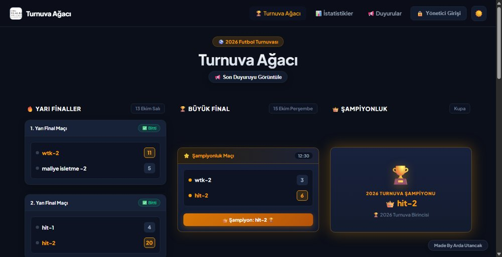
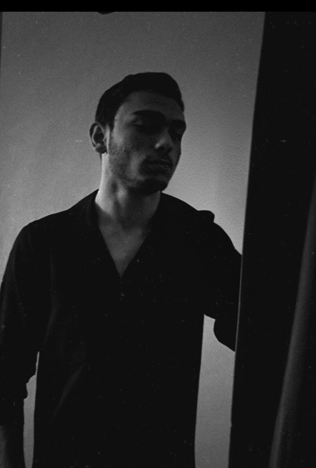
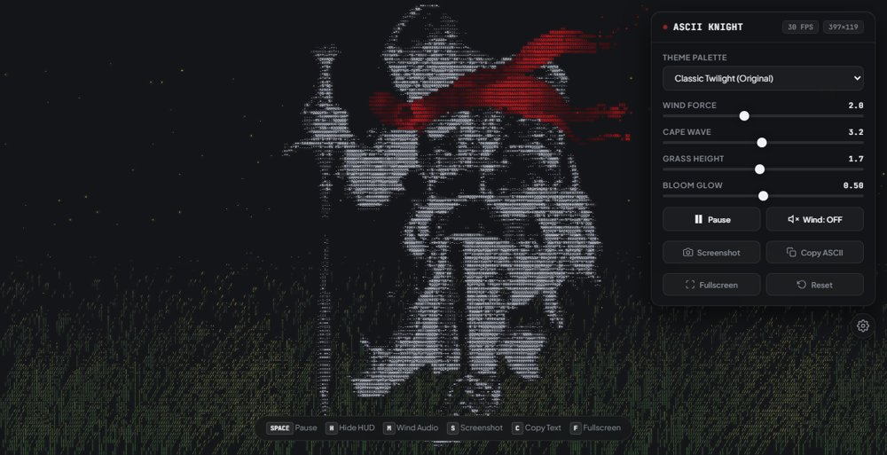
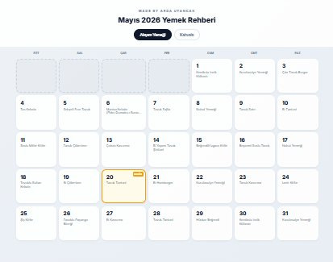
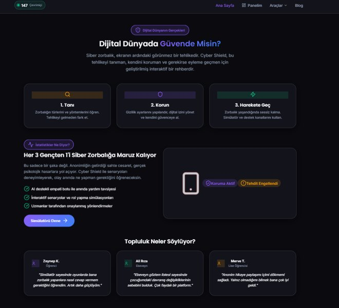
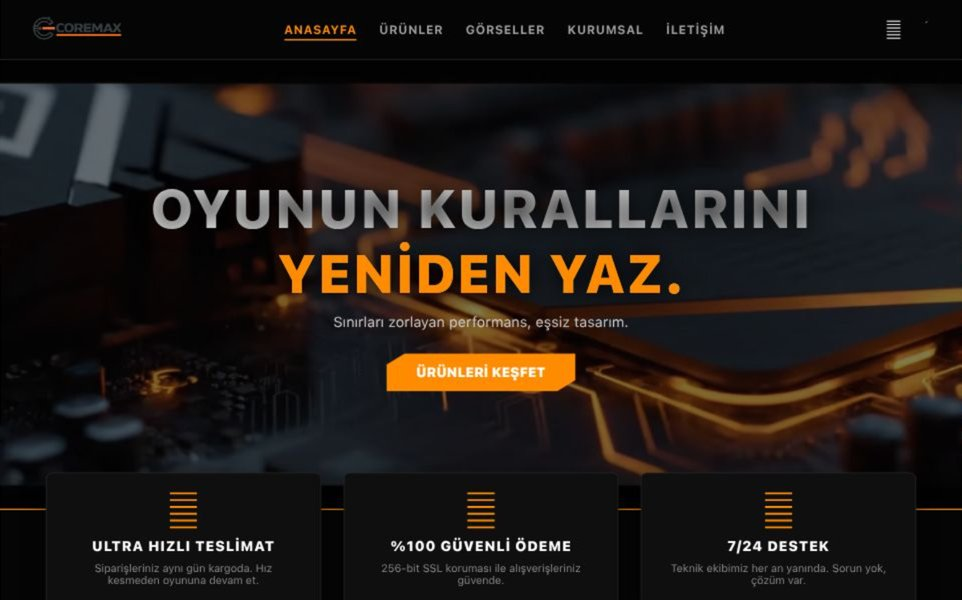
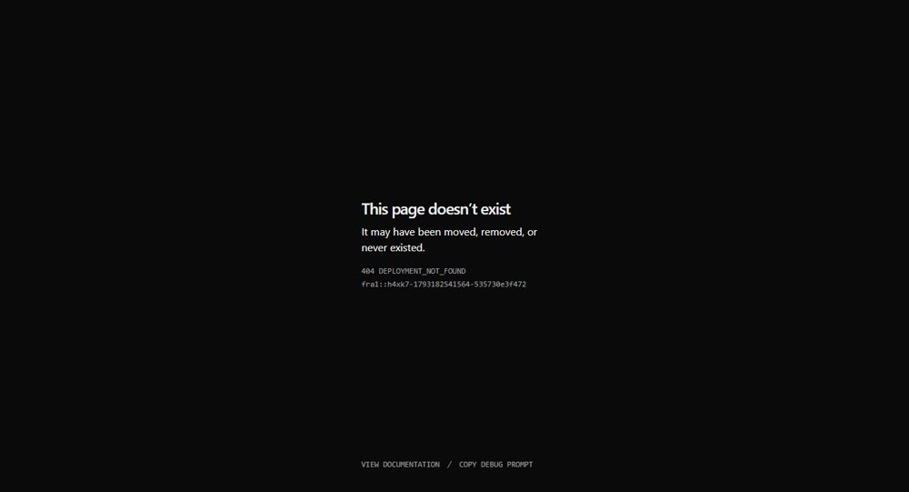
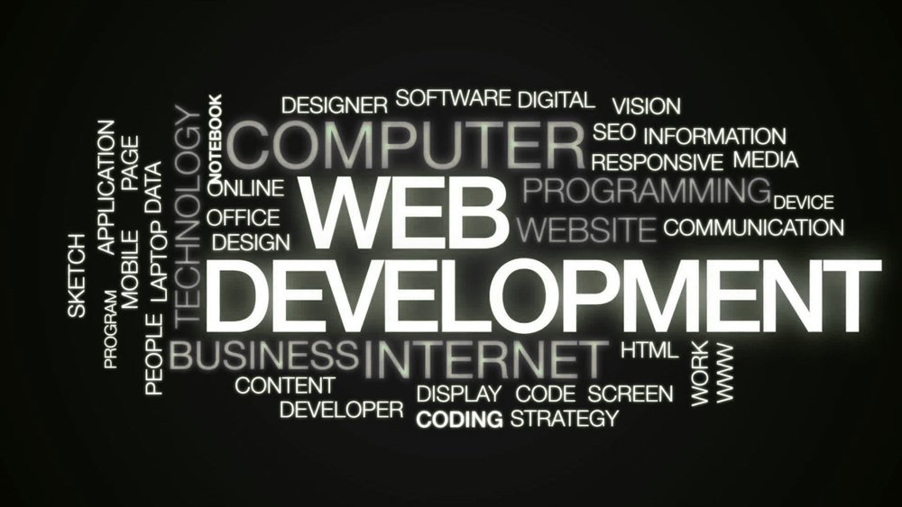
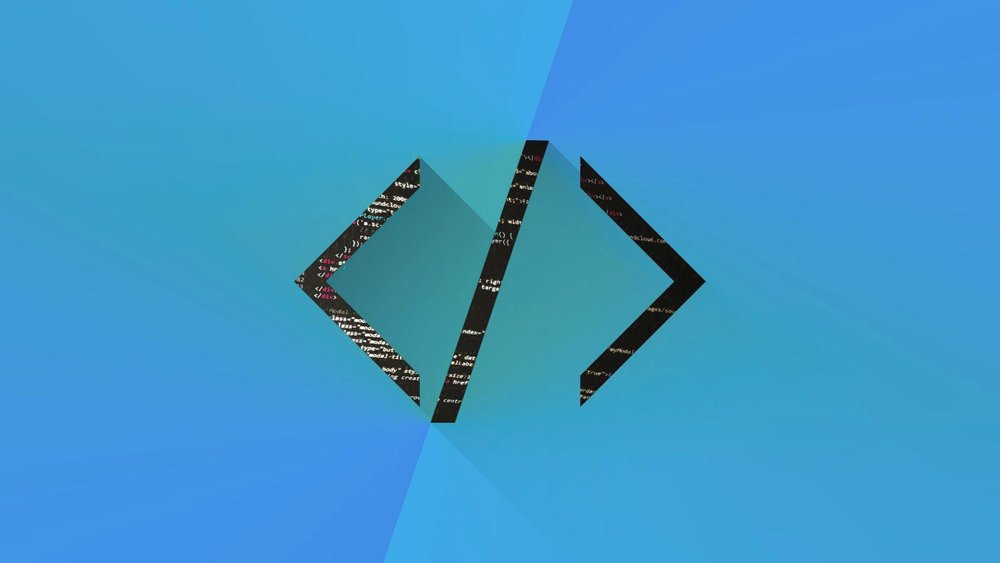

Supabase RealtimeFutbol Turnuva Ağacı & Canlı İstatistik
5 takımlı eleme ağacı, Supabase WebSockets ile anlık skor aktarımı, skorlardan puan tablosuna otomatik hesaplama motoru ve 34 oyunculu gol krallığı takip sistemi.
Merhaba, ben Arda Utancak. Yüksek performanslı, mobil uyumlu, gerçek zamanlı (realtime) web arayüzleri ve interaktif Canvas/WebGL deneyimleri inşa eden bir Front-End geliştiriciyim.

Yazılım serüvenime lise yıllarında Çiğli Borsa İstanbul Mesleki ve Teknik Anadolu Lisesi'nde Visual Studio ile C# ve Java dillerinde Nesne Yönelimli Programlama (OOP) ve veritabanı altyapıları inşa ederek başladım.
Kurumsal sektöre ilk adımımı Uniteks IT Departmanı'nda atarak donanım kurulumları, Help Desk kullanıcı desteği, TCP/IP ağ yapılandırmaları ve 3X-UI gibi proxy/VPN panel yönetim süreçlerini deneyimledim.
Şu an Manisa Celal Bayar Üniversitesi — Web Tasarımı ve Kodlama programında modern web ekosistemine (JavaScript ES6+, Supabase Realtime, HTML5 Canvas ve Three.js) odaklanarak eğitimime devam ediyor; geliştirdiğim projeleri doğrudan Vercel üzerinde canlıya alıyorum.
Projenin gereksinimine göre modern, hafif ve yüksek performanslı kütüphanelerle çalışıyorum.
Modern web arayüzleri & etkileşimli mimariler
Gerçek zamanlı senkronizasyon & veri yönetimi
Nesne yönelimli mimari & algoritmalar
Kurumsal ağ yönetimi & modern deploy
Kullanıcıyı yormayan, her ekranda akıcı çalışan ve modern tasarım trendlerine uygun işler üretiyorum.
Akıllı telefon, tablet ve geniş masaüstü ekranlarında kusursuz duyarlılık (responsive). Gereksiz kütüphanelerden arındırılmış, anında açılan hafif mimariler.
Supabase WebSockets ve modern JavaScript kullanarak sayfa yenilenmesine gerek kalmadan anlık skor, fikstür ve veri senkronizasyonu sağlayan interaktif paneller.
Three.js / WebGL ile 3B modelleme ve parça analizi; HTML5 Canvas API ile 60 FPS akıcı fizik ve parçacık simülasyonları geliştirebilme yetkinliği.
Figma üzerinde modern glassmorphism, karanlık tema ve WCAG erişilebilirlik standartlarına uygun kullanıcı arayüzleri ve interaktif prototipler tasarlama.
Tüm projelerimi Vercel ve GitHub üzerinde canlı olarak inceleyebilirsiniz.

Supabase Realtime5 takımlı eleme ağacı, Supabase WebSockets ile anlık skor aktarımı, skorlardan puan tablosuna otomatik hesaplama motoru ve 34 oyunculu gol krallığı takip sistemi.

Canvas & Web AudioSıfır kütüphane; Bézier eğrileriyle pelerin ve kumaş fiziği, 3B perspektifli dinamik çayır, Web Audio API pembe gürültü rüzgar sentezi ve 60 FPS bellek rasterizasyonu.

Mobil ÖncelikliDevlet yurtlarındaki düşük internet hızlarında bile anında açılan, öğrencilerin günlük ve haftalık menülere tek ekranda ulaşmasını sağlayan hafif dashboard.

WCAG ErişilebilirÇocuk ve gençleri akran zorbalığı hakkında bilgilendiren, çevrimiçi vaka simülasyonları içeren pedagojik ve WCAG uyumlu interaktif eğitim platformu.

E-Ticaret VitriniBilgisayar donanımları odaklı konsept teknoloji markası için tasarlanmış kurumsal kimlik, modern logo ve dinamik grid ürün kataloğu arayüzü.

Vercel Canlı2. Sınıf Güz dönemi için saf JavaScript ile geliştirilmiş, dinamik Dark/Light mod desteği, gün tespiti ve sınav takvimi sunan mobil uyumlu web platformu.

Three.js / WebGLGerçek zamanlı 3B jet motoru modelleme, kamera yörünge kontrolleri, parça inceleme ve havacılık telemetri analiz platformu.

Flask & SQLiteAdmin, Akademisyen ve Öğrenci olmak üzere 3 rollü yetkilendirme mimarisi; ders atama, vize/final not girişi ve devamsızlık takip sistemi.
Front-End geliştirme, freelance iş teklifleri veya fikir alışverişi için dilediğiniz zaman ulaşabilirsiniz.